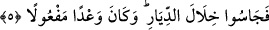

Kızmış aslan gibi birbirlerine düştüler
Gürüz, mızrak ve kılıç ile birbirlerine hücum ettiler
İsrâiloğulları;
“Allah’ım zâlimleri zâlimlerle meşgul et. Onların arasından bizi sağ sâlim ve
ganimetlerle çıkar.” diye duâ ettiler. Keder, gam ve musibet, perişanlık tozunu o yerle
bir olanların gözüne saçtı. Hezimeti ganimet bildiler. Gönülleri firarda karar kıldı ve
birbirlerinden kaçtılar.
Ne karara mahal ne de kavgaya mecâl kaldı
Muradları kalmayıp yüzlerini kaçmaya çevirdiler
Onların malları da İsrâiloğulları’na kaldı. Bu beş büyük ordunun ganimetini
tasarrufları altına alınca “Gerçek şu ki, kendini kendine yeterli gördüğü için insan
azar.” (el-Alak, 96/6-7) âyetinin hükmüne göre tekebbür başını ısyan yakasından dışarı
çıkardılar, baş kaldırdılar. Zorbalık elini azgınlık yeninden çıkardılar. Tevrât’ın
hükmünü bir tarafa bıraktılar. Her ne kadar Yeremya Peygamber onlara nasihat verdi ve
Tevrât’ta bildirilen şeyleri söylediyse de kendilerini ilâhî öfkeyle karşı karşıya
getirdiler ve peygamberin sözünü işitmediler. Hak Sübhânehû ve Teâlâ, mecûsî
Buhtunnasr’ı onların üzerine gönderdi. Buhtunnasr, Sencârib’in kâtibi idi. Onun
vefâtından sonra vasiyet yoluyla hükümdarlık ona geçti. Buhtunnasr, gelip onlarla
muharebe etti ve onlara galib oldu. Mescid’i harap etti ve Tevrât’ı yaktı.
İsrâiloğulları’ndan yetmiş bin kişiyi esir aldı. Bu onlara birinci cezâ idi.
Bu cezâdan sonra Hemedanlı Koreş -ki İsrâiloğulları’ndan bir kadını istiyordu- bu
durumdan haberdar olunca çok mal, otuz bin dülger ve diğer ameleyi kendisiyle getirdi.
Otuz sene İlya vilâyetini mamur etmek için meşgul oldu. Sonunda orayı eski hâline
getirdi. Bir zaman İsrâiloğulları yine hoş vakit geçirdiler. Malları ve çocukları çoğaldı.
Muhâlefet sevdası tekrar tabiatlarından baş kaldırdı. Masum peygamber Yahya (a.s.)’ı
öldürdüler. Hz. Îsâ (a.s.)’ı öldürmeye teşebbüs ettiler. İkinci ceza onlara yetişti. Romalı
Titus, onlara galebe çaldı. Tekrar Mescid’i harap eyledi ve İsrâiloğulları’nın
kazandıklarını yağmaladı. Nitekim Allah Teâlâ şöyle buyurmaktadır:
5. Bunlardan ilkinin zamanı gelince, üzerinize güçlü kuvvetli kullarımızı
gönderdik. Bunlar, evlerin arasında dolaşarak (sizi) aradılar. Bu, yerine getirilmiş
bir vaad idi.